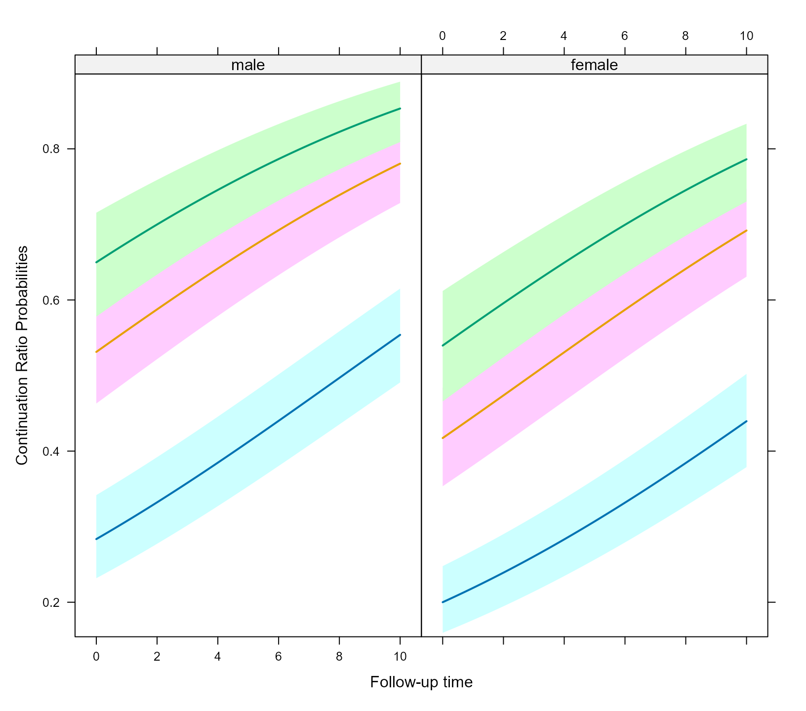
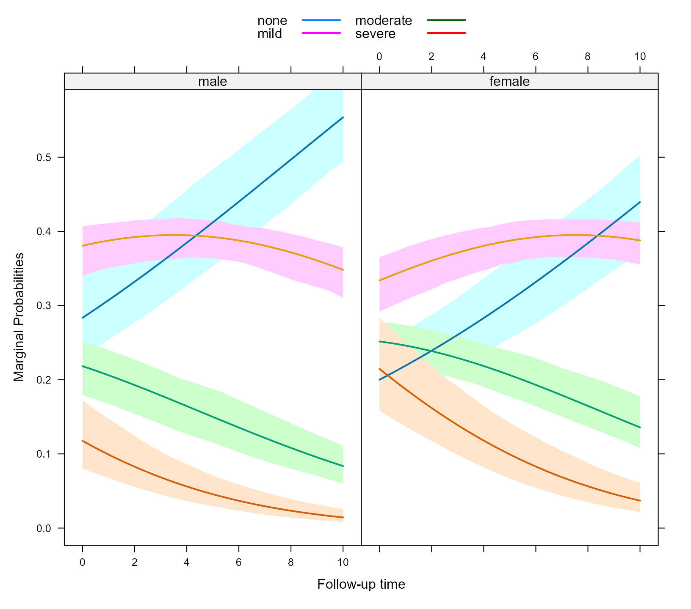
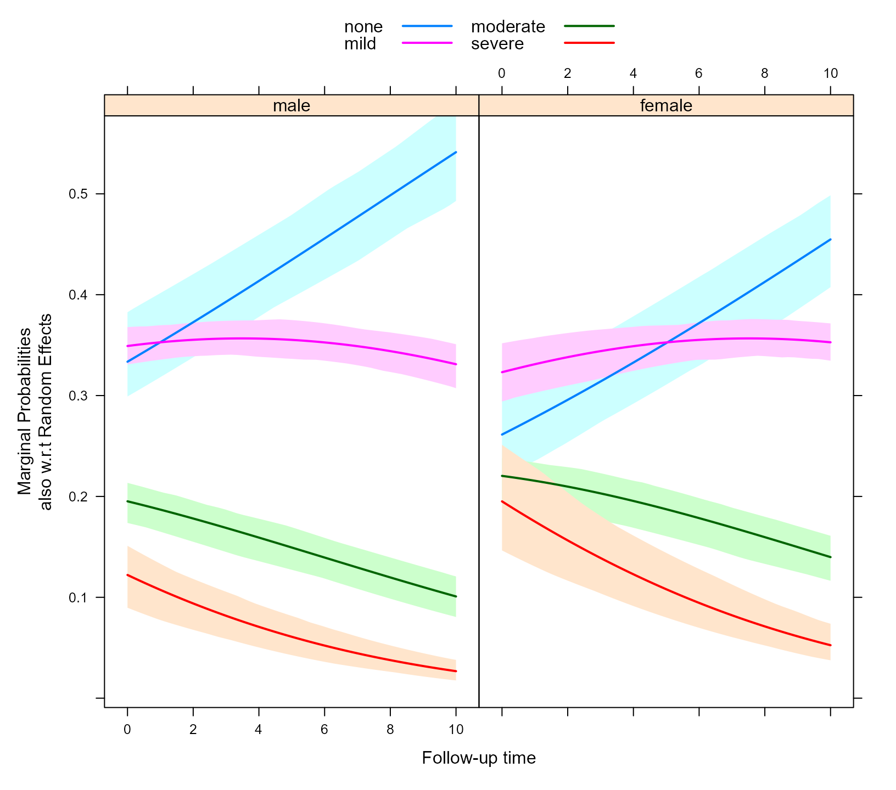

vignettes/Ordinal_Mixed_Models.Rmd
Ordinal_Mixed_Models.RmdIn many applications the outcome of interest is an ordinal variable, i.e., a categorical variable with a natural ordering of its levels. For example, an ordinal response may represent levels of a standard measurement scale, such as pain severity (none, mild, moderate, severe) or economic status, with three categories (low, medium and high). A variety of statistical models, namely, proportional odds, adjacent category, stereotype logit, and continuation ratio can be used for an ordinal response. Here we focus on the continuation ratio model. Let \(y_i\) denote a vector of grouped/clustered outcome for the \(i\)-th sample unit (\(i = 1, \ldots, n\)). We assume that each measurement in \(y_{ij}\), \((j = 1, \ldots, n_i)\) can take values \(K + 1\) possible values in the ordered set \(\{0, 1, \ldots, K\}\). The continuation ratio mixed effects model is based on conditional probabilities for this outcome \(y_i\). Namely, the backward formulation of the model postulates: \[ \log \left \{ \frac{\Pr(y_{ij} = k \mid y_{ij} \leq k)}{1 - \Pr(y_{ij} = k \mid y_{ij} \leq k)} \right \} = \alpha_k + x_{ij}^\top \beta + z_{ij}^\top b_i, \] whereas the forward formulation is: \[ \log \left \{ \frac{\Pr(y_{ij} = k \mid y_{ij} \geq k)}{1 - \Pr(y_{ij} = k \mid y_{ij} \geq k)} \right \} = \alpha_k + x_{ij}^\top \beta + z_{ij}^\top b_i, \] where $k {0, 1, , K} $, \(x_{ij}\) denotes the \(j\)-th row of the fixed effects design matrix \(X_i\), with the corresponding fixed effects coefficients denoted by \(\beta\), \(z_{ij}\) denotes the \(j\)-th row of the random effects design matrix \(Z_i\) with corresponding random effects \(b_i\), which follow a normal distribution with mean zero and variance-covariance matrix \(D\). The coefficients \(\alpha_k\) denote the threshold parameters for each category. The design matrix for the fixed effects \(X\) does not contain an intercept term because the separate threshold coefficients \(\alpha_k\) are estimated. The design matrix for the random effects \(Z\) contains the intercept, implicitly assuming the same random intercept for all categories of the ordinal response variable. For identification reasons, \(K\) threshold parameters are estimated.
The backward formulation is commonly used when progression through disease states from none, mild, moderate,severe is represented by increasing integer values, and interest lies in estimating the odds of more severe disease compared to less severe disease. The forward formulation specifies that subjects have to ‘pass through’ one category to get to the next one. The forward formulation is a equivalent to a discrete version of Cox proportional hazards models.
In the backward formulation the marginal probabilities for each category are given by \[ \Pr(y_{ij} = k) = \left \{ \begin{array}{ll} \frac{\exp(\alpha_k + x_{ij}^\top \beta + z_{ij}^\top b_i)}{1 + \exp(\alpha_k + x_{ij}^\top \beta + z_{ij}^\top b_i)} & k = K,\\\\ \frac{\exp(\alpha_k + x_{ij}^\top \beta + z_{ij}^\top b_i)}{1 + \exp(\alpha_k + x_{ij}^\top \beta + z_{ij}^\top b_i)} \times \prod_{k' > k} \frac{1}{1 + \exp(\alpha_{k'} + x_{ij}^\top \beta + z_{ij}^\top b_i)}& k < K, \end{array} \right. \] whereas in the forward formulation they get the form: \[ \Pr(y_{ij} = k) = \left \{ \begin{array}{ll} \frac{\exp(\alpha_k + x_{ij}^\top \beta + z_{ij}^\top b_i)}{1 + \exp(\alpha_k + x_{ij}^\top \beta + z_{ij}^\top b_i)} & k = 0,\\\\ \frac{\exp(\alpha_k + x_{ij}^\top \beta + z_{ij}^\top b_i)}{1 + \exp(\alpha_k + x_{ij}^\top \beta + z_{ij}^\top b_i)} \times \prod_{k' < k} \frac{1}{1 + \exp(\alpha_{k'} + x_{ij}^\top \beta + z_{ij}^\top b_i)}& k > 0, \end{array} \right. \]
Note: These are marginal probabilities over the categories of the ordinal response; as the above formulation shows, these are still conditional on the random effects.
An advantage of the continuation ratio model is that its likelihood can be easily re-expressed such that it can be fitted with software the fits (mixed effects) logistic regression. The details behind this re-expression of the likelihood are given, for example, in Armstrong and Sloan (1989), and Berridge and Whitehead (1991). This formulation requires a couple of data management steps creating separate records for each measurement, and suitably replicating the corresponding rows of the design matrices \(X_i\) and \(Z_i\). In addition, a new ‘cohort’ variable is constructed denoting at which category the specific measurement of \(i\)-th subject belongs. An extra advantage of this formulation is that we can easily evaluate if specific covariates satisfy the ordinality assumption (i.e., that their coefficients are independent of the category \(k\)) by including into the model their interaction with the ‘cohort’ variable and testing its significance.
In this section we will illustrate how the continuation ratio model can be fitted with the mixed_model() function of the GLMMadaptive package. We start by simulating some data for an ordinal longitudinal outcome under the forward formulation of the continuation ratio model:
set.seed(1234)
n <- 300 # number of subjects
K <- 8 # number of measurements per subject
t_max <- 15 # maximum follow-up time
# we constuct a data frame with the design:
# everyone has a baseline measurment, and then measurements at random follow-up times
DF <- data.frame(id = rep(seq_len(n), each = K),
time = c(replicate(n, c(0, sort(runif(K - 1, 0, t_max))))),
sex = rep(gl(2, n/2, labels = c("male", "female")), each = K))
# design matrices for the fixed and random effects
# we exclude the intercept from the design matrix of the fixed effects because in the
# CR model we have K intercepts (the alpha_k coefficients in the formulation above)
X <- model.matrix(~ sex * time, data = DF)[, -1]
Z <- model.matrix(~ time, data = DF)
thrs <- c(-1.5, 0, 0.9) # thresholds for the different ordinal categories
betas <- c(-0.25, 0.24, -0.05) # fixed effects coefficients
D11 <- 0.48 # variance of random intercepts
D22 <- 0.1 # variance of random slopes
# we simulate random effects
b <- cbind(rnorm(n, sd = sqrt(D11)), rnorm(n, sd = sqrt(D22)))
# linear predictor
eta_y <- drop(X %*% betas + rowSums(Z * b[DF$id, , drop = FALSE]))
# linear predictor for each category under forward CR formulation
# for the backward formulation, check the note below
eta_y <- outer(eta_y, thrs, "+")
# marginal probabilities per category
mprobs <- cr_marg_probs(eta_y)
# we simulate ordinal longitudinal data
DF$y <- unname(apply(mprobs, 1, sample, x = ncol(mprobs), size = 1, replace = TRUE))
DF$y <- factor(DF$y, levels = 1:4, labels = c("none", "mild", "moderate", "severe"))Note: If we wanted to simulate from the backward formulation of continuation ratio model, we need to reverse the ordering of the thresholds, namely the line eta_y <- outer(eta_y, thrs, "+") of the code above should be replaced by eta_y <- outer(eta_y, rev(thrs), "+"), and also specify in the call to cr_marg_probs() that direction = "backward".
As explained in the Estimation Section above, before proceeding in fitting the model we need to reconstruct the database by creating extra records for each longitudinal measurement, a new dichotomous outcome and a ‘cohort’ variable denoting the record at which the original measurement corresponded. These variables are created with the cr_setup() function. The underlying code in this function is based on the code of the cr.setup() function of the rms package, but allowing for both the forward and backward formulation of the continuation ratio model. The specific steps are:
cr_vals <- cr_setup(DF$y)
cr_data <- DF[cr_vals$subs, ]
cr_data$y_new <- cr_vals$y
cr_data$cohort <- cr_vals$cohortBy default cr_setup() works under the forward formulation (i.e., the one we have simulated from). To fit the continuation ratio model under the backward formulation, we would need to set direction = "backward" in the call to cr_setup().
Hence, to fit the model we will use the outcome y_new in the new dataset cr_data.
We begin with a random intercepts model, with fixed effects sex and time. Note that the cohort variable needs also to be included into the model:
fm <- mixed_model(y_new ~ cohort + sex + time, random = ~ 1 | id,
data = cr_data, family = binomial())
fm
#>
#> Call:
#> mixed_model(fixed = y_new ~ cohort + sex + time, random = ~1 |
#> id, data = cr_data, family = binomial())
#>
#>
#> Model:
#> family: binomial
#> link: logit
#>
#> Random effects covariance matrix:
#> StdDev
#> (Intercept) 1.346031
#>
#> Fixed effects:
#> (Intercept) cohorty>=mild cohorty>=moderate sexfemale
#> -0.9269543 1.0520746 1.5450799 -0.4591298
#> time
#> 0.1143118
#>
#> log-Lik: -2712.608According to the definition of the model, the coefficients have a log odds ratio interpretation for a unit increase of the corresponding covariate. For example, exp(fixef(fm)['sexfemale']) = 0.63 is the odds ratio for females versus males for \(y = k\), whatever the conditioning event \(y \geq k\).
As an illustration, we show how we can relax the ordinality assumption for the sex variable, namely, allowing that the effect of sex is different for each of the response categories of our ordinal outcome \(y\). As explained earlier, this can be achieved by simply including the interaction term between the sex and cohort variables, i.e.:
gm <- mixed_model(y_new ~ cohort * sex + time, random = ~ 1 | id,
data = cr_data, family = binomial())
gm
#>
#> Call:
#> mixed_model(fixed = y_new ~ cohort * sex + time, random = ~1 |
#> id, data = cr_data, family = binomial())
#>
#>
#> Model:
#> family: binomial
#> link: logit
#>
#> Random effects covariance matrix:
#> StdDev
#> (Intercept) 1.3446
#>
#> Fixed effects:
#> (Intercept) cohorty>=mild
#> -0.9247568 1.0967165
#> cohorty>=moderate sexfemale
#> 1.4406591 -0.4605628
#> time cohorty>=mild:sexfemale
#> 0.1140999 -0.0843883
#> cohorty>=moderate:sexfemale
#> 0.1790653
#>
#> log-Lik: -2711.869To test whether this extension is required we can perform a likelihood ratio test using the anova() method:
anova(fm, gm)
#>
#> AIC BIC log.Lik LRT df p.value
#> fm 5437.22 5459.44 -2712.61
#> gm 5439.74 5469.37 -2711.87 1.48 2 0.4775As we expected the test suggests that sex satisfies the ordinality / continuation ratio assumption.
Finally, we produce effect plots based on our final model fm. The required data for these plots are calculated from the effectPlotData() function. Note that because we would like to obtain the predicted values and confidence intervals for all categories of our ordinal outcome, we also need to include the cohort variable in the specification of the data frame based on which effectPlotData() will calculate the predicted values. The following code calculates the data for the plot for both sexes and follow-up times in the interval from 0 to 10:
nDF <- with(cr_data, expand.grid(cohort = levels(cohort), sex = levels(sex),
time = seq(0, 10, length.out = 55)))
plot_data <- effectPlotData(fm, nDF)Then we produce the plot with the following call to the xyplot() function from the lattice package:
expit <- function (x) exp(x) / (1 + exp(x))
my_panel_bands <- function(x, y, upper, lower, fill, col, subscripts, ..., font,
fontface) {
upper <- upper[subscripts]
lower <- lower[subscripts]
panel.polygon(c(x, rev(x)), c(upper, rev(lower)), col = fill, border = FALSE, ...)
}
xyplot(expit(pred) ~ time | sex, group = cohort, data = plot_data,
upper = expit(plot_data$upp), low = expit(plot_data$low), type = "l",
panel = function (x, y, ...) {
panel.superpose(x, y, panel.groups = my_panel_bands, ...)
panel.xyplot(x, y, lwd = 2, ...)
}, xlab = "Follow-up time", ylab = "Continuation Ratio Probabilities")
The my_panel_bands() is used to put the different curves for the response categories in the same plot.
The effect plot of the previous section depicts the conditional probabilities according to the forward formulation of the continuation ratio model. However, it is easier to understand the marginal probabilities of each category, calculated according to the formulas presented in the first section and the cr_marg_probs() function. The effectPlotData() can calculate these marginal probabilities by invoking its CR_cohort_varname argument in which the name of the cohort variable needs to be provided. The following call calculates the plot data for the marginal probabilities based on model fm:
The dataset produced by effectPlotData() contains a new variable named ordinal_response that specifies the different categories of the ordinal outcome. To plot these probabilities we use an analogous call to xyplot():
key <- list(space = "top", rep = FALSE,
text = list(levels(DF$y)[1:2]),
lines = list(lty = c(1, 1), lwd = c(2, 2), col = c("#0080ff", "#ff00ff")),
text = list(levels(DF$y)[3:4]),
lines = list(lty = c(1, 1), lwd = c(2, 2), col = c("darkgreen", "#ff0000")))
xyplot(expit(pred) ~ time | sex, group = ordinal_response, data = plot_data_m,
upper = expit(plot_data_m$upp), low = expit(plot_data_m$low), type = "l",
panel = function (x, y, ...) {
panel.superpose(x, y, panel.groups = my_panel_bands, ...)
panel.xyplot(x, y, lwd = 2, ...)
}, xlab = "Follow-up time", ylab = "Marginal Probabilities", key = key)
To marginalize over the random effects as well you will need to set the marginal argument of effectPlotData() to TRUE, e.g.,
plot_data_m2 <- effectPlotData(fm, nDF, CR_cohort_varname = "cohort",
direction = "forward", marginal = TRUE, cores = 2)To plot these probabilities we use an analogous call to xyplot():
xyplot(expit(pred) ~ time | sex, group = ordinal_response, data = plot_data_m2,
upper = expit(plot_data_m2$upp), low = expit(plot_data_m2$low), type = "l",
panel = function (x, y, ...) {
panel.superpose(x, y, panel.groups = my_panel_bands, ...)
panel.xyplot(x, y, lwd = 2, ...)
}, xlab = "Follow-up time",
ylab = "Marginal Probabilities\nalso w.r.t Random Effects",
key = key)